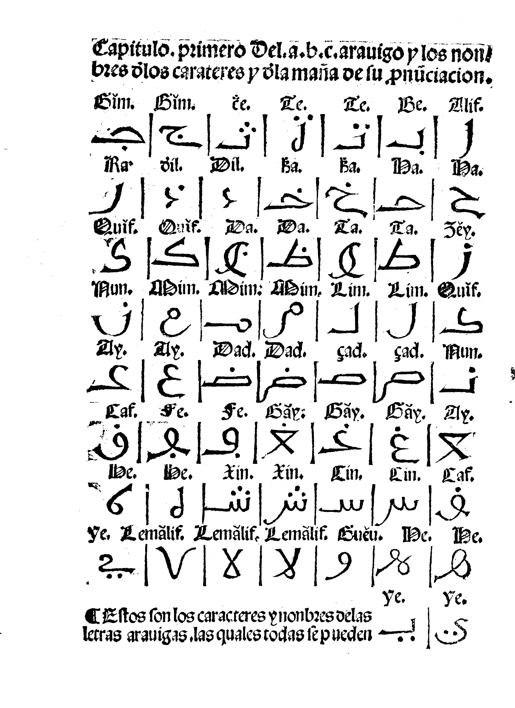

Published [date]
CC BY-NC-SA 4.0
FIXME add links
Pedro de Alcalá was a Hieronymite scholar who, in the early 16th century, wrote Arte para ligera mente saber la lengua araviga (Art to slightly learn the Arabic language). This volume is a Spanish-language grammar of Arabic which also contained Arabic translations of Catholic prayers, in which the Arabic was transcribed using the romanization system he invented. In 1505 Granada, he published the second edition of the Arte along with the first edition of his Vocabulista aravigo en lengua castellana (Arabic lexicon in Castilian language). The purpose of Alcalá’s work was for the clergy to learn Arabic and convert the Muslim population of recently-conquered Granada.

| Romanization | Letter Name | ||||
|---|---|---|---|---|---|
| Sun or Moon Letter | Letter | Alcalá | EI3 | Alcalá | EI3 |
| ا | ⟨a⟩, ⟨e⟩, ⟨i⟩, omit | ⟨ā⟩ or omit | Alif | Alif | |
| ☾ | ب | ⟨b⟩ | ⟨b⟩ | Be | Bāʾ |
| ☼ | ت | ⟨t⟩ | ⟨t⟩ | Te | Tāʾ |
| ة | ⟨-a⟩ or ⟨-e⟩, ⟨-at⟩ or ⟨-et⟩ in iḍāfa | ⟨-a⟩; ⟨-at⟩ in iḍāfa | Te marbŏta | Tāʾ marbūṭa | |
| ☼ | ث | ⟨ċ⟩ | ⟨th⟩ | Ċe | Thāʾ |
| ☾ | ج | ⟨j⟩, ⟨g + e, i⟩ | ⟨j⟩ | Gĭm | Jīm |
| ☾ | ح | ⟨h⟩ | ⟨ḥ⟩ | Ha | Ḥāʾ |
| ☾ | خ | ⟨k̇⟩ | ⟨kh⟩ | k̇a | Khāʾ |
| ☼ | د | ⟨d⟩ | ⟨d⟩ | Dil | Dāl |
| ☼ | ذ | ⟨ḋ⟩ | ⟨dh⟩ | Ḋil | Dhāl |
| ☼ | ر | ⟨r⟩ | ⟨r⟩ | Ra | Rāʾ |
| ☼ | ز | ⟨z⟩, ⟨ç⟩, ⟨c + e, i⟩ | ⟨z⟩ | Zĕy | Zāy |
| ☼ | س | ⟨ç⟩, ⟨c + e, i⟩, ⟨z⟩ | ⟨s⟩ | Cin | Sīn |
| ☼ | ش | ⟨x⟩ | ⟨sh⟩ | Xin | Shīn |
| ☼ | ص | ⟨ç⟩, ⟨c + e, i⟩, ⟨z⟩ | ⟨ṣ⟩ | Çad | Ṣād |
| ☼ | ض | ⟨d⟩, ⟨ḋ⟩ | ⟨ḍ⟩ | Dad | Ḍād |
| ☼ | ط | ⟨t⟩ | ⟨ṭ⟩ | Ta | Ṭāʾ |
| ☼ | ظ | ⟨d⟩, ⟨ḋ⟩ | ⟨ẓ⟩ | Da | Ẓāʾ |
| ☾ | ع | عـ over a vowel: ⟨a͑, e͑, ı͑, o͑, u͑⟩ | ⟨ʿ⟩ | Ay | Ayn |
| ☾ | غ | ⟨g⟩, ⟨gu + e, i⟩ | ⟨gh⟩ | Găy | Ghayn |
| ☾ | ڢ | ⟨f⟩ | ⟨f⟩ | Fe | Fāʾ |
| ☾ | ق | ⟨c⟩, ⟨qu + e, i⟩, ⟨-q⟩, ⟨-c⟩ | ⟨q⟩ | Caf | Qāf |
| ☾ | ك | ⟨c⟩, ⟨qu + e, i⟩, ⟨-q⟩, ⟨-c⟩ | ⟨k⟩ | Quĭf | Kāf |
| ل | ⟨l⟩ | ⟨l⟩ | Lim | Lām | |
| ☼ | ﻻ | ⟨la⟩, ⟨le⟩, ⟨li⟩ | ⟨lā⟩ | Lemălif | Lāmalif |
| ☾ | م | ⟨m⟩ | ⟨m⟩ | Mim | Mīm |
| ☼ | ن | ⟨n⟩ | ⟨n⟩ | Nun | Nūn |
| ☾ | ﻩ | ⟨h⟩ | ⟨h⟩ | He | Hāʾ |
| ☾ | و | ⟨o⟩, ⟨u⟩, ⟨gu-⟩ | ⟨w⟩, ⟨ū⟩, ⟨-uww-⟩, ⟨-ū⟩ | Guĕu | Wāw |
| ☾ | ي | ⟨y⟩, ⟨i⟩, ⟨ĭ⟩, ⟨ñ-⟩ for ⟨ni-⟩ | ⟨y⟩, ⟨ī⟩, ⟨-iyy-⟩, ⟨ī⟩ | Ye | Yāʾ |
| ☾ | ء | omit | ⟨ʾ⟩ (omit at start of word) | Hĕmza | Hamza |
| ـَا، ـِي، ـُو | stress: ⟨ă⟩, ⟨ĕ⟩, ⟨ĭ⟩, ⟨ŏ⟩, ⟨ŭ⟩ | long vowels: ⟨ā⟩, ⟨ī⟩, ⟨ū⟩ | |||
Alcalá’s system is based on Early Modern Spanish with seseo. He indicates stress with a caron on the stressed vowel (although he does not indicate stress in the Spanish text), and closely transcribes imāla, sun letters and iḍāfa. Unfortunately, he does not differentiate between emphasized and unemphasized consonants—for example, both ⟨ت⟩ /t/ and ⟨ط⟩ /tˤ/ are transcribed as ⟨t⟩—or between /s/ and /z/. Neither does he transcribe geminated (doubled) consonants—for instance, Iskandariyya = Alexandria is transcribed as Yzcandarĭa.
Notes about particular Alcalcá’s transcription of particular sounds:
A word of caution if you want to use Alcalá’s system to transcribe Granadan Arabic: because the vowels are transcribed closely, your best bet is to find the words in Alcalá’s work, refer to another source for the Granadan Arabic pronunciation, or interpolate the desired word from the Literary Arabic form and related words in Alcalá’s transcription.
The article al- is transcribed as al when before a moon letter and a when before a sun letter. (For more information on sun and moon letters, see this article by Sara al-Garnatiyya.) For example, one page after the Ave Maria, the Arte has al aguĭl (elsewhere al auĭl) for al-awwal = lo primero = the first and a ċĕni for al-thānī = lo segundo = the second.
The masculine nisba ending -ī is transcribed as ⟨-i⟩, ⟨-ĭ⟩, ⟨-ĭi⟩, or ⟨-iĭ⟩. The feminine nisba ending -iyya is transcribed as ⟨-ĭa⟩. For example, two pages after the Ave Maria, the Arte has niçrăni for naṣrānī = cristiano = Christian (masc. sg.) and niçranĭa for naṣrāniyya = cristiana = Christian (fem. sg.).
The standard Literary Arabic nasab/patronymic markers (listed in SENA Appendix A) are ibn for son and bint for daughter. In the Vocabulista, these words are given as ibn and ĭbne (s.v. hijo, hija). ĭbne is equivalent to Literary Arabic ibna (a synonym for bint), which is ibnat under iḍāfa. For more information about iḍāfa, see Wikipedia on the construct state and this article by Mālik ibn Jinnī. Interpolating, we have ĭbnet as the relationship marker to use in names. (This is corroborated by the documentary forms abent, ybnat and ybent found in Ana Labarta’s La Onomastica de los Moriscos Valencianos.)
Similarly, looking up the kunya/teknonymic markers gives us ebŭ for abu = padre = father (s.v. padre) and ŏm for umm = madre = mother (s.v. madre), although elsewhere in the work the name of Abū Maṣār is given as Abumasar in Spanish and Abu Masăr in Arabic, while the name of Abū Atār is given as Abiatar in Spanish and Abiatăr in Arabic.
To transcribe a devotional name like ʿAbd Allāh, you’ll need to find the components separately: a͑abd for ʿabd = esclavo = slave, Allăh for Allāh = Dios = God.
In 1566 Valencia, Martín de Ayala published a bilingual Spanish-Arabic Catholic catechism, Doctrina Christiana, en lengua Araviga, y Castellana (Christian Doctrine in the Arabic and Castilian Languages). The Arabic text was transcribed in a variant of Alcalá’s system. The differences between the systems are as follows:
| Alcalá | Ayala |
|---|---|
| ⟨b⟩ | ⟨b⟩, ⟨v⟩ |
| ⟨ċ⟩ | ⟨th⟩ |
| ⟨k̇⟩ | ⟨ħ⟩ |
| ⟨ḋ⟩ | ⟨dh⟩ |
| ⟨gua-⟩, ⟨gue-⟩, ⟨gui-⟩, ⟨guo-⟩ | ⟨hua-⟩, ⟨hue-⟩, ⟨hui-⟩, ⟨huo-⟩ |
| emphasis: ⟨ă⟩, ⟨ĕ⟩, ⟨ĭ⟩, ⟨ŏ⟩, ⟨ŭ⟩ | emphasis: ⟨á⟩, ⟨é⟩, ⟨í⟩, ⟨ó⟩, ⟨ú⟩ |
Ayala treats ⟨i⟩ and ⟨y⟩ less interchangeably, but ⟨b⟩ and ⟨v⟩ more interchangeably. I’m not sure whether this reflects a general trend of changes in Spanish orthography and phonology, regional differences, or just individual quirks of the authors. I’m similarly unsure why he chose to use ⟨hu-⟩ instead of ⟨gu-⟩ for word-initial /w/.
Ayala’s work illuminates some differences between Valencian and Granadan Arabic. The main section of Doctrina Christiana is titled La Doctrina Christiana en Aravigo, A táa͑lim neceraníe fal Aa͑ravíe. In Alcalá’s transcription of Granadan Arabic, this would be A tăa͑lim niçranĭa fal Aa͑rabĭa. In Literary Arabic, EI3 transcription, this would be Al-taʿlīm naṣrāniyya fī al-ʿarabiyya.
Similarly, my name in Alcalá’s transcription of Granadan Arabic is Mĕriem al Ixbilĭa, Mĕryem al Yxbilĭa, or any combination of these spellings. (I mostly use Mĕryem al Ixbilĭa.) In Ayala’s transcription of Valencian Arabic, my name is Mériem al Ixbilíe (or maybe Mériem el Ixbilíe; I’m not sure when the article was affected by imāla). In Literary Arabic, EI3 transcription, it’s Maryam al-Ishbīliyya. In more casual contexts, I often write my name as Méryem al Ixbilía, using Alcalá’s system but with acute accents instead of carons or breves, because it’s easier to type.
Alcalá and Ayala included Arabic translations of many of the same prayers, which allows me to compare their transcription systems and the relevant dialects of Arabic. Ayala also included a pronunciation guide. For the convenience of anyone who wishes to check my work, I provide this evidence below.
| Alcalá | Ayala | English (from Ayala’s Spanish) | |
|---|---|---|---|
| El signar & santiguar. | El santiguar. | The Sign of the Cross. | |
| Biha͑q ✝ aa͑lĕmat açalĭb, regĭne ✝ ya răbune, mi aa͑ ✝ dĕina. | Bi ráxim matá almuquéddez açáleb, negí ne ya rábena, men aa͑déna. | Por la señal de la sancta ✝ cruz, libra nos ✝ Señor, de nuestros ✝ enemigos. | By the sign of the holy ✝ cross, free us ✝ Lord, from our ✝ enemies. |
| Bizmillĕh guĭld, gualĕd, guăroh al cudŭç, illĕhum guăhid. | Biçmilé hi huíld, hueléd, roh alcúduç, huáhed Alláh. Amín. | En nombre del padre, y del hijo, y del Spiritu sancto, un Dios. Amen. | In the name of the Father, and of the Son, and of the Holy Spirit, one God. Amen. |
| El Pater noster. | El Pater noster. | The Lord’s Prayer. | |
| Guăliduna, alledĭ fa cemeguĕt, cudŭçum ĭzmuque: | Huíldine, alledí énte fe cemehuét, yetqueddéç íçmeq: | Padre nuestro, que estas en los cielos, sanctificado sea tu nombre: | Our Father who art in heaven, hallowed be thy name: |
| tĕti melecŭtuq: | múlqueq higíline: | el tu reyno venga a nos: | thy kingdom come: |
| lecŭnu yrădtuque filărdi quemĕ fi çemĕ: | ticír irádataq quemé fa çamé, cadhé fal árd: | hagase tu voluntad como en el cielo, ansi en la tierra: | thy will be done on earth, as it is in heaven: |
| k̇ŏbzane cŭlliyăumi aa͑tĭnehu fi hĕde al yăum: | ħóbzena matá culliém ahtíh léne eliém: | el pan nuestro de cada dia da nos lo hoy: | give us this day our daily bread: |
| guĕ agfirli line ḋunŭbene, quemĕ nagfĭru năhnu li mĕn aa͑çăillĕyna: | huá agfér lena dhunúbené, quif hénna nagféro le aa͑déna: | y perdona nos nuestras deudas, ansi como nosotros perdonamos a nuestros deudores: | and forgive us our trespasses, as we forgive those who trespass against us: |
| guă le totk̇ilna a tajărib: | huá le teçóqna le tajárib: | y no nos traygas ala tentacion: | and lead us not into temptation: |
| lĕquin negĭne mi naxarr. Amĭn. | léquin negíne men cúlli dún. Amín. | mas libra nos de todo mal. Amen. | but deliver us from evil. Amen. |
| El Ave Maria. | El Ave Maria. | Hail Mary. | |
| Afrahĭ ya çăleha Mĕriem ya mumlŭatem mim a nĭe͑ma, a răbbumăa͑c: | Afráh ya Mériem malé men née͑ma, rábena hu máa͑q: | Dios te salve Maria llena de gracia, el Señor es contigo: | Hail, Mary, full of grace, the Lord is with thee: |
| mubăraca ĕnte fi nicĕ, guă mubăraca hi ċamărat bătniq rrăbbuna ı͑ĭça, allăh azĕguejĕt. | mováreca énte véyne a neçé, huá mováreq thamárat matá vátnaq ı͑íça. | bendita tu entre las mugeres, y bendito el fructo de tu vientre Jesus. | blessed art thou among women, and blessed is the fruit of thy womb, Jesus. |
| Ya çăleha Mĕriem om allăh, argăb ăa͑nina, gua a͑ăn jamĭe͑ al muḋnibĭn. Amĭn. | Ya çáleha Mériem om alláh, argáb áa͑nena, huá a͑n cúllehum el mudnevín. Amín. | Sancta Maria madre de Dios, ruega por nos, y por todos los peccadores. Amen. | Holy Mary, Mother of God, pray for us, and for all sinners. Amen. |
I have modernized the Spanish spellings in this table for easier reference.
| Alcalá | Ayala | EI3 | Spanish | English |
|---|---|---|---|---|
| quĭbr | quíbrr | kibr, fakhr | soberbia | pride |
| tămaa͑ | támaa͑ | ṭamaʿ | avaricia | greed |
| zinĕ, zinĭ | zené | zināʾ, shahwa | lujuria | lust |
| gadăb | ghadáb | ghaḍab | ira | wrath |
| danăqua | danáca | danāqa, sharāha | gula | gluttony |
| guĭl, guĭll, hacĕd | guéra | ghill, ḥasad, ghayra | envidia | envy |
| a͑ăgeç, a͑ăjeç | áa͑geç | ʿajz, kasal | pereza | sloth |
❧ Reglas para saber leer las dictiones Aravigas desta doctrina.
❧ Porque la lengua Araviga (como todas las de mas) tiene no solamente proprios characteres, pero aun proprias pronunciaciones y sonidos de letras, que no se pueden bien suplir con letras Latinas: estara el lector avisado con estas reglas siguientes, para saber bien leer, y pronunciar las palabras Aravigas desta doctrina Christiana.
❧ Estaras advertido lector, si quisieres deprender algunos vocablos Aravigos por esta doctrina, que hemos tenido cuydado de poner cada diction Araviga debaxo de la Castellana a quien responde, quanto se ha podido suffrir.
❧ Rules to know how to read the Arabic phrases of this doctrine.
❧ Because the Arabic language (like all languages) has not only its own characters, but also its own pronunciations and sounds of letters, which cannot be easily substituted with our own, the reader will be advised with these following rules, how to read well, and pronounce the Arabic words of this Christian doctrine.
❧ Be advised, reader, if you wish to learn some Arabic words from this doctrine, that we have taken care to place each Arabic phrase beneath the Castilian to which it corresponds, as much as could be supported.